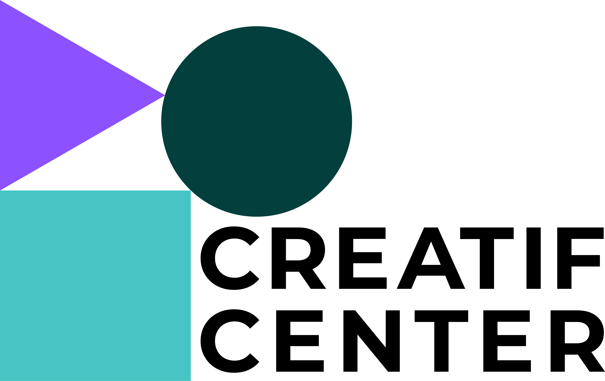
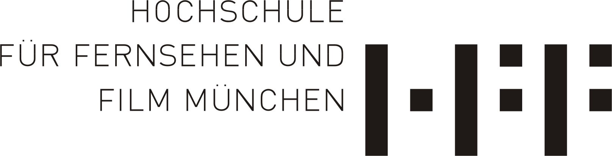
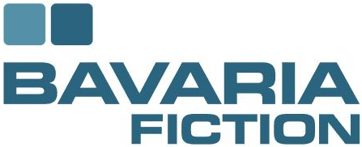
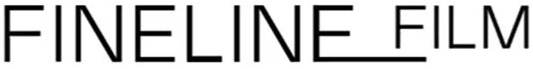

Hi, I'm
Elizabeth "Elli" Bouquet 🌸
Currently growing solutions where tech meets human creativity @ CreatiF Center | HFF Munich.
I enjoy turning complex ideas into feasible and intuitive solutions by relying on my experience in UX design, coding, and academic research.
My interest began in university group projects focused on software, app and game development, where I often took responsibility for both functionality and design. I later applied the same mindset in professional roles across fintech, industrial trainings, and academic research at Interhyp AG, Accenture PLC, and at the CreatiF Center, building strong skills in structured problem solving, fast execution, and adapting quickly to new domains.
I work fast, think clearly, and enjoy connecting technical and non-technical perspectives. I am especially drawn to workflow and process related challenges and to interdisciplinary teams where learning, ownership, and collaboration matter. I bring adaptability, responsibility, and a creative mindset to teams that value impact and continuous improvement.
UX Design
Research
<Coding>
Companies I worked for

Projects/Cooperations with


